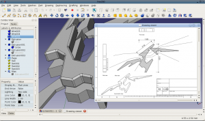

FreeCAD

0.11 版本的屏幕截图 - see more screenshots
Fetching news feed...
Loading latest commits...
Loading latest issues...
Loading facebook widget...
FreeCAD 是通用且开源的三维 CAD/MCAD/CAx/CAE/PLM 建模工具, 目标直指机械工程与产品设计，也面向更广泛的工程应用，例如建筑或其他工程领域。FreeCAD 以参数化特征建模为核心功能，基于模块化的软件架构而实现，可在不改动系统核心的的前提下进行功能扩展。
FreeCAD 建立于强大的几何核心 OpenCasCade 之上，采用 Coin 3D 提供的与 Open Inventor 兼容的三维场景模型，并提供丰富的 Python 应用程序接口，其图形交互界面基于 Qt 实现。FreeCAD 能够确保在 Windows, Mac OS X 与 Linux 平台上运行时用户交互界面的一致性。
了解更多...
核心功能
- 支持以插件（模块）形式对核心功能进行扩展的模块化的软件架构。所实现的扩展可以像一个全新的应用程序那样复杂，也可像 Python 脚本 或所录制的 macros 那样简单
尚在开发的功能
- 具备约束求值的草图 (Sketcher) 模块，以实现具有几何约束的二维形状草图建模。目前 草图模块支持多种几何约束类型，可使用它们作为 FreeCAD 中其他对象的构建基础。
- 机器人仿真模块，可用于研究机器人运动。该模块目前已具备一个宽泛的图形界面，可仅仅通过图形交互界面进行机器人运动仿真。
- 渲染模块，可导出三维对象，以供外部渲染工具实现模型渲染，目前仅支持povray，但是将来有望扩展到其他渲染工具。
- 建筑模块，支持 BIM 风格的工作流程，并兼容 IFC。建筑模块的设计与实现还在社区讨论阶段，见这里。
手册
FreeCAD 手册提供致力于提供有关 FreeCAD 使用的最好的文档，依赖于社区的努力该文当尚在撰写中，目前已有多种语言的版本。这份文档依然缺乏许多信息，如果你有空闲时间请给予帮助!
其他
开发动态
从开发路线页面可获得有关开发计划的一些新闻，在更改记录 与 路线图页面中可获得当前版本至下一版本发行过程中的一些动态，或者在项目统计页面查阅有关 FreeCAD 代码库的更为详细的信息。有关开发的所有事宜通过论坛沟通交流，如果你有兴趣，那么一定要前往。
源代码
FreeCAD 可通过 cMake 或 autotools 进行编译，SVN 代码仓库地址位于 https://free-cad.svn.sourceforge.net/svnroot/free-cad/trunk ，编译指南可根据操作系统环境参考 Windows, Unix/Linux 与 MacOSX。
FreeCAD 项目需要你的帮助
FreeCAD 会受益于你的帮助, 可以参与测试与Bug 报告，或者参与指南的撰写。我们也缺乏 Mac OS X 平台的用户，如果你有一台 mac 机器，请帮助我们！另外，也欢迎你参与FreeCAD 本地化翻译工作。如果你熟悉 C++ 或 Python 编程并且愿意参与开发，那就更好了，请到论坛联系我们！
订阅 FreeCAD!
This is the documentation wiki of FreeCAD. The information contained here is what forms the offline documentation shipped with FreeCAD itself. You have two main ways to browse through the documentation: by exploring user hubs, or by following the manual. It is a work in progress, written by the community of users and developers of FreeCAD. If you find information that is wrong or missing, please help!
User hubs
Users hub: This page contains documentation useful for FreeCAD users in general: a list of all the workbenches, detailed instructions on how to install and use the FreeCAD application, tutorials, and all you need to get started.
Power users hub: This page gathers documentation for advanced users and people interested in writing python scripts. You will also find there a repository of macros, instructions on how to install and use them, and more information about customizing FreeCAD to your specific needs.
Developers hub: This section contains material for developers: How to compile FreeCAD yourself, how the FreeCAD source code is structured and how to navigate in it, and how to develop new workbenches, or embed FreeCAD in your own application.
Manual
The FreeCAD manual is another, more linear way to present the information contained in this wiki. It is made to be read like a book, and will gently introduce you to many other pages from the hubs above.
ebook versions are also available, as well as
a couple of translations in pdf format.
Table of contents
The following table lists all the articles of this wiki that form the backbone of the offline documentation shipped with the FreeCAD application. It is already available in several languages:
Get involved
How to participate
There is plenty to do inside the FreeCAD project, if you are interested in helping us. Of course, there are programming tasks for C++ or Python programmers, but there are also many things you can do even if you cannot code, such as
- writing documentation and Editing the wiki
- helping newcomers
- translating the application and documentation
- helping with the packaging of the latest release of FreeCAD for your favourite operating system
- helping other people around you to discover FreeCAD.
The help FreeCAD page describes it all with more details. Starting from 2016, FreeCAD is also participating to the Google Summer of Code. The Contributors hub page is another effort to gather the possible ways to help and contribute to the FreeCAD project.
Source code
FreeCAD can be compiled on all platforms using cMake. The source code is LGPL-licensed and hosted on GitHub. There are build instructions for Windows, Unix/Linux and MacOSX. The source code documentation is hosted here, generated by Doxygen, and documented on the wiki.
About the development
Check the Development roadmap for news about what is being planned, the Changelog and Roadmap pages on the FreeCAD tracker to see the progress towards next release, or the Project statistics for even more information about the FreeCAD codebase. All the development communication happens on the forum, so be sure to visit it if you are interested in participating.


{kind=link}
{kind=link}
{kind=link}
{kind=link}
{kind=link}
{kind=link}
{kind=link}
{kind=link}
{kind=link}
{kind=link}